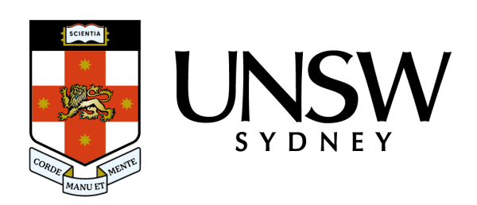

Computer Science so far ü뮂Äçüíª
Hey there! Welcome to my Computer Science journey so far!
I'm currently in my final year of a Bachelor of Science (Computer Science) degree, which I am completing at UNSW.
Here's a small summary of the subjects and skills that I have encountered during my studies so far!
Click on the subject names to find out more about my experiences
| COMP1531: Software Engineering Fundamentals | COMP3311: Database systems | COMP3121: Algorithms & Programming Techniques | COMP1521: Computer Systems Fundamentals |
|---|---|---|---|
| Backend development of HTTP server for user-end application | Understanding and implementation of SQL | Algorithm design techniques (dp, greedy, divide & conquer, flow networks, etc.) | Understanding and implementation of assembly (mips) |
| Group work for major project. Use of Git for CI/CD | Relational design theory and Query Evaluation | Critical thinking and problem solving | Bitwise operations, Unicode, Floating point |
| Javascript, Typescript and Dynamic Verification | DB programming using PLpgSQL, Psycopg2 and Python | Analysis and justification of algorithm correctness and validity | Working with files, processes and threads |
| COMP1511: Programming Fundamentals | COMP2521: Data Structures & Algorithms | COMP3231: Operating Systems (ongoing) | COMP3411: Artifical Intelligence (ongoing) |
|---|---|---|---|
| Introduction to Computer Science and programming | Data Structures (BSTs, Graphs, etc.) and ADTs | Concepts and implementation of processes and threads | Classifying AI tasks and types of Agents |
| C programming language and C compilation | Graph Traversal and algorithms | Concurrency and synchronisation | Constraint Satisfaction and Backtracking Search |
| Program design, style, testing and debugging | Sorting, hashing and complexity | File Management and memory | Understanding heuristics and Heuristic searches |
I began my Computer Science journey at the start of 2023, when I enrolled into a Bachelor of Science (Computer Science) at the University of New South Wales. I had previously completed a year of study at UNSW and so those credits ended up being counted as free electives towards my current degree